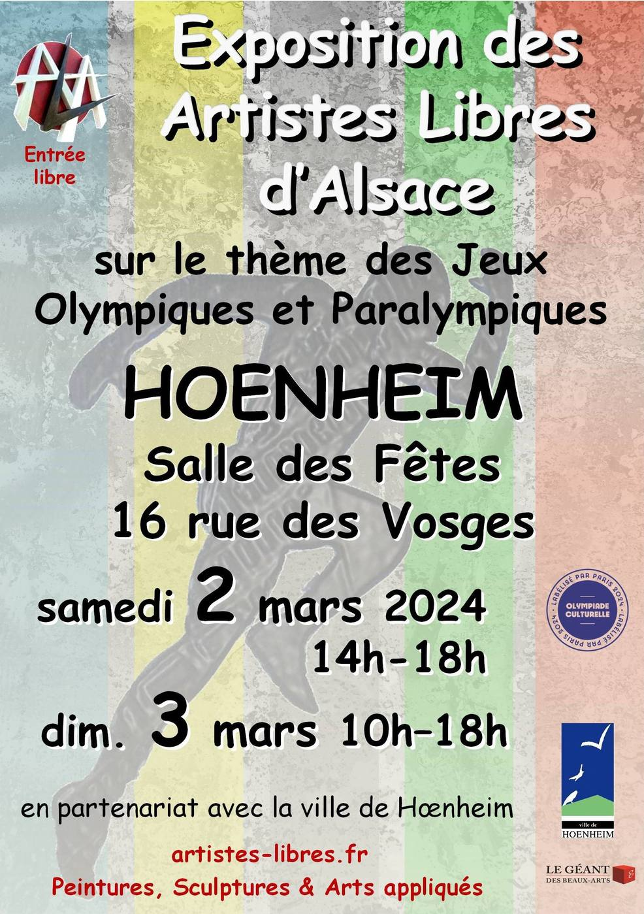

- Cet événement est terminé
Exposition Jeux Olympiques des Artistes Libres d’Alsace
2 mars 2024 à 14 h 00 min - 3 mars 2024 à 18 h 00 min
Navigation de l'événement

Organisée en collaboration avec la ville, l’association ALA vous invite à son exposition sur les Jeux Olympiques samedi 2 mars de 14 h à 18h et dimanche 3 mars 2024 de 10h à 18h à la salle des fêtes, 16 rue des Vosges. A découvrir, de nombreuses peintures, sculptures et arts appliqués… d’une vingtaine d’artistes de la région. Entrée libre. Les visiteurs se verront proposer un atelier créatif où ils pourront participer à la réalisation de tableaux originaux.
« ALA » est un groupement d’artistes peintres et de créateurs d’art non professionnels habitant en Alsace qui organise six expositions par an. Il y a une pré-sélection sur dossier, puis une sélection finale lors d’une exposition test. Les candidats sont mis durant un an à l’essai. Les critères pour devenir membre : la recherche de l’excellence artistique, le sens de la convivialité, l’implication dans le déroulement de l’exposition. Pour les contacter, rendez-vous au 19 rue Ambroise Paré à Strasbourg ou composez le 06 82 80 96 42